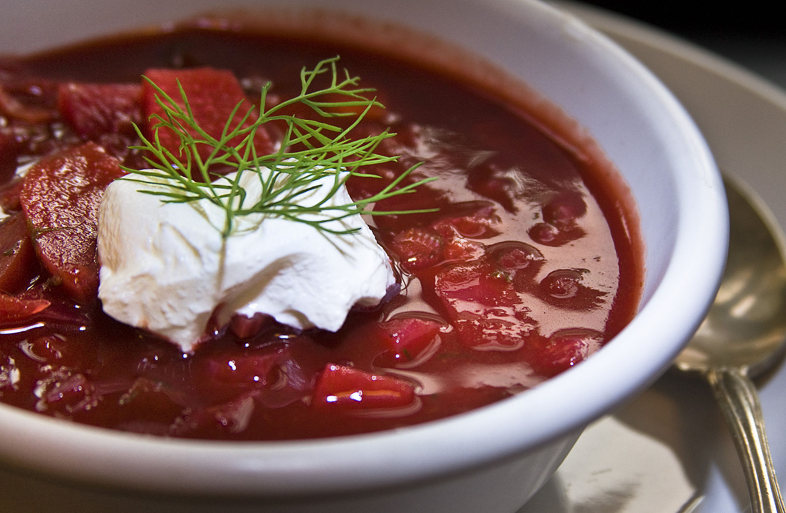

Ukrainian Red Borscht Soup

Description
This borscht recipe is delicious, nutritious, and full of flavor. Plus, its gorgeous red hue is absolutely stunning!
Borscht is a sour soup that is traditionally made with meat stock and boiled vegetables. The Ukrainian version,
which features beets, is perhaps the most well known type —
but varieties of borscht can be found throughout Central and Eastern Europe and Northern Asia.
Ingredients
- Sausage: This Ukrainian borscht recipe starts with a pound of pork sausage.
- Vegetables: You&apos ll need beets, carrots, baking potatoes, cabbage, and an onion.
- Canned tomatoes: Use drained diced tomatoes and canned tomato paste.
- Vegetable oil: Cook the onion in oil.
- Water: You&apos ll need almost nine cups of water for this big-batch soup.
- Garlic: Three cloves of garlic add bold flavor.
Steps
- Cook the sausage and set aside.
- Boil water, add the sausage, then add the vegetables and diced tomatoes.
- Cook the onion, stir in the tomato paste, and thin with water. Transfer to the pot.